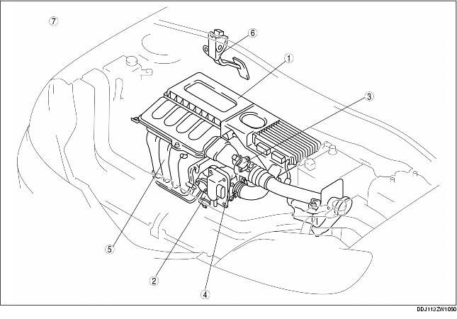

Intake-air system location index [ZY]  . 1 Air cleaner (See AIR CLEANER ELEMENT INSPECTION [ZY].) 2 Variable intake air shutter valve actuator (See VARIABLE INTAKE AIR SHUTTER VALVE ACTUATOR REMOVAL/INSTALLATION [ZY].) (See VARIABLE INTAKE AIR SHUTTER VALVE ACTUATOR INSPECTION [ZY].) 3 Variable tumble shutter valve actuator (See VARIABLE TUMBLE SHUTTER VALVE ACTUATOR REMOVAL/INSTALLATION [ZY].) (See VARIABLE TUMBLE SHUTTER VALVE ACTUATOR INSPECTION [ZY].) 4 Throttle body (See THROTTLE BODY INSPECTION [ZY].) 5 Intake manifold (See INTAKE MANIFOLD VACUUM INSPECTION [ZY].) 6 Accelerator pedal (See ACCELERATOR PEDAL REMOVAL/INSTALLATION [ZY].) 7 Intake-air system (See INTAKE-AIR SYSTEM REMOVAL/INSTALLATION [ZY].)